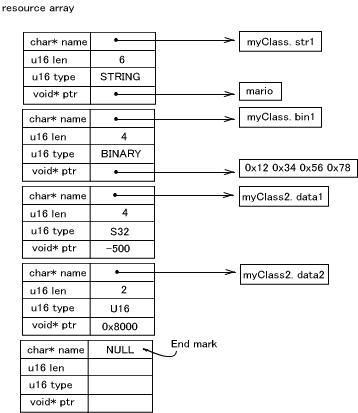
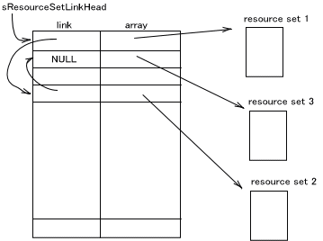

The ENV Library provides a method for easily obtaining values defined as resources from a program. Resources are various parameters and configuration values for which the resource names have been defined. Resource values are obtained from a program by designating a resource name.
This environmental resource library is very convenient for testing operation during program development by changing parameters or by using shared configuration values on multiple programs.
Resource Definitions
In this ENV library, resource values are returned in response to queries about resource names. A resource name comprises a class name, a period ("."), and a member name.
(Example)
In the case of the resourcemyServer.Hostname,myServeris the class name, andHostnameis the member name.
These resources can be assigned any of the following values: u8, s8, u16, s16, u32, s32, u64, s64, BOOL, string, or binary. string is character string data, while binary is binary data.
Resources are managed internally with one ENVResource structure. (Two structures are used for 64-bit resource values.)
struct ENVResource
{
char* name;
u16 len;
u16 type;
void* ptr;
};
name is a pointer to the resource name. len is the length of the resource. type is the information type when the resource is declared. ptr is the pointer to the location where the character string and data are actually stored for string and binary. Values for u8, s8, u16, s16, u32, s32, or BOOL are assigned to ptr. u64 and s64 use two continuous resource data structures.
A Description of the Resource Data
Resource data is defined with the ENVResource structure array. The following macros, which define at once the len, type, and ptr members for the previously-described ENVResource structure, will make it easier to include resources.
ENV_U8() |
A macro for a u8 value. |
ENV_S8() |
A macro for an s8 value. |
ENV_U16() |
A macro for a u16 value. |
ENV_S16() |
A macro for an s16 value. |
ENV_U32() |
A macro for a u32 value. |
ENV_S32() |
A macro for an s32 value. |
ENV_U64() |
A macro for a u64 value. |
ENV_S64() |
A macro for an s64 value. |
ENV_BOOL() |
A macro for a BOOL value. |
ENV_STRING() |
A macro for a character string. |
ENV_BINARY() |
A macro for binary data. |
By using these macros, resources are defined as combinations of resource names and resource macros as shown below.
ENVResource myResource[] = {
"myClass.str1", ENV_STRING( "mario" ),
"myClass.bin1", ENV_BINARY( "\x12\x34\x56\x78" ),
"myClass2.data1", ENV_S32( -500 ),
"myClass2.data2", ENV_U16( 0x8000 ),
ENV_RESOURCE_END
};Be sure to add ENV_RESOURCE_END at the end of the data.
The resource array defined above is then managed internally in the following way.

The Resource Array List
Searches for resources are performed from the resource array. In the ENV Library, multiple resource arrays can be registered in the system. The resource arrays are linked together as a list inside the system. When a search is performed, it is conducted on every array listed in that list. Searches are performed from the very beginning of the list, and from the very beginning of the arrays. If the same resource exists in both, the first one found will be used.
ENV_AppendResourceSet() adds new resource arrays to the end of the list.ENV_PrependResourceSet() adds new resource arrays to the beginning of the list.ENV_InsertResourceSet() adds new resource arrays to a location of the user's choice.
ENV_SetResourceSet() and ENV_SetResourceSetArray() delete lists that have been registered up to this point and then register a specified list.
There is a limit to the number of resource arrays that can be registered. The number is ENV_RESOURCE_SET_MAX. (Defined as 8.)

Declaring Resource Arrays
ENV_Init() is used to initialize the ENV Library and to set which resource arrays will be used. Set the resource arrays used for resourceArray[] in advance, and call them before all ENV functions. ENV_Init() needs to be called only once (but it doesn't matter if it is called more than once).
Obtaining Resource Values
Use the functions that get resource values from resource names based on the resource definition, as shown below.
ENV GetU8() |
A u8 value defined with ENV_U8(). |
ENV GetS8() |
An s8 value defined with ENV_S8(). |
ENV GetU16() |
A u16 value defined with ENV_U16(). |
ENV GetS16() |
An s16 value defined with ENV_S16(). |
ENV GetU32() |
A u32 value defined with ENV_U32(). |
ENV GetS32() |
An s32 value defined with ENV_S32(). |
ENV GetU64() |
A u64 value defined with ENV_U64(). |
ENV GetS64() |
An s64 value defined with ENV_S64(). |
ENV GetBOOL() |
A BOOL value defined with ENV_BOOL(). |
ENV_GetString() |
A character string defined with ENV_STRING(). |
ENV_GetBinary() |
Binary data defined with ENV_BINARY(). |
The obtained values are stored at the beginning of the pointer designated in the arguments. The function return value indicates whether or not the values were successfully obtained.
Two functions have been prepared that get character strings and binaries along with their sizes: ENV_GetStringAndLength() and ENV_GetBinaryAndSize().
Omitting Class Names
By passing the class names to the ENV Library in advance, the class name part can be omitted and the member name can be used alone to designate the functions that require resource names. When designating a member name by itself, be sure to add a period (".") before the name.
Use ENV_SetClass() to declare class names.
(Example)
All of the following, where the class name is declared,u32 d1, d2, d3;
(void)ENV_GetU32( "myClass.myData1", &d1 );
(void)ENV_GetU32( "myClass.myData2", &d2 );
(void)ENV_GetU32( "myClass.myData3", &d3 );
can be designated in the following forms, with only the member names:u32 d1, d2, d3;
ENV_SetClass( "myClass" );
(void)ENV_GetU32( ".myData1", &d1 );
(void)ENV_GetU32( ".myData2", &d2 );
(void)ENV_GetU32( ".myData3", &d3 );
The function used to obtain the current configuration values is ENV_GetClass().
An Example of Using the ENV Library
Below is an example of using the ENV Library.
ENVResource myResource1[] = {
"server1.hostName", ENV_STRING( "myserver" ),
"server1.IP", ENV_BINARY( "\xc0\xA8\x00\x01" ),
"server1.port", ENV_U16( 5000 ),
ENV_RESOURCE_END
};
ENVResource myResource2[] = {
"server2.hostName", ENV_STRING( "ftpserver" ),
"server2.IP", ENV_BINARY( "\xc0\xA8\x00\x02" ),
"server2.port", ENV_U16( 21 ),
ENV_RESOURCE_END
};
ENVResource* resourceArray[]={ myResource1, myResource2, NULL };
main()
{
char* hostname;
u8* ipAddress;
int ipSize;
u16 portNum;
:
//----ENV system initialization
ENV_Init();
//---specify omitted class name
ENV_SetClass("server1");
//----get resource
if ( ! ENV_GetString( ".hostName", &hostname ) )
{
OS_Printf( "error:hostname is not defined.\n" );
};
if ( !ENV_GetBinaryAndSize( ".IP", &ipAddress, &ipSize ) )ipAddress is not defined.\n" );
{
OS_Printf( "error:
};
if ( !ENV_GetU16( ".port", &portNum ) )
{
OS_Printf( "error:portNum is not defined.\n" );
};
}
Searching for Resources under Specified Conditions
The ENVResourceIter structure has been defined to search for resources using specified class names or member names. This is used as a search iterator. The functions that obtains the resource by using the iterators are ENV_InitIter(), ENV_SearchByClass(), ENV_SearchByMember(), ENV_SearchByType(), and ENV_SearchByPartialName().
The following shows the resource with the specified class "className" being obtained.
ENVResourceiter iter;
ENVResource* p;
ENV_InitIter( &iter );
while( (p = ENV_SearchByClass( &iter,
"className" ) ) )
{
OS_Printf( "resource = %s\n", p->name );
}
To search for a resource with the specific name "memberName," use the following statements. The member name is a text string that does not contain a period ("."). If there are any periods other than the delimiter between the class and member, the comparison will be performed on the member name up to the location of the first period.
ENVResourceIter iter;
ENVResource* p;
ENV_InitIter( &iter );
while( (p = ENV_SearchByMember( &iter, "memberName" )) )
{
OS_Printf( "resource = %s\n", p->name );
}For example, when searching with the member name "member,"
"class.member"
"class.member.001"
"class.member.class"has a match, but
"class.member001"
"class.member2.member"contain no matches.
Resource Arrays that Include Resources
The resource array to which the resource belongs can be obtained with ENV_GetLastResourceSetForIter() immediately after searching for the resource using an iterator.
To designate a resource and obtain the resource array that belongs to that resource, use ENV_GetBelongingResourceSet().
08/29/2005 Added support for multiple registrations of a resource array.
08/17/2005 Initial version.